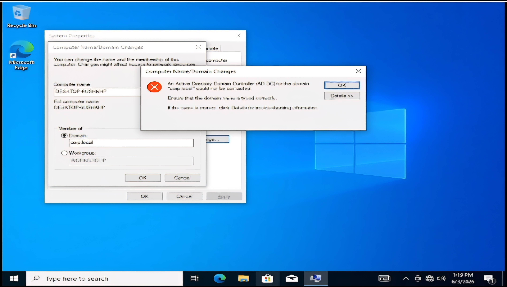
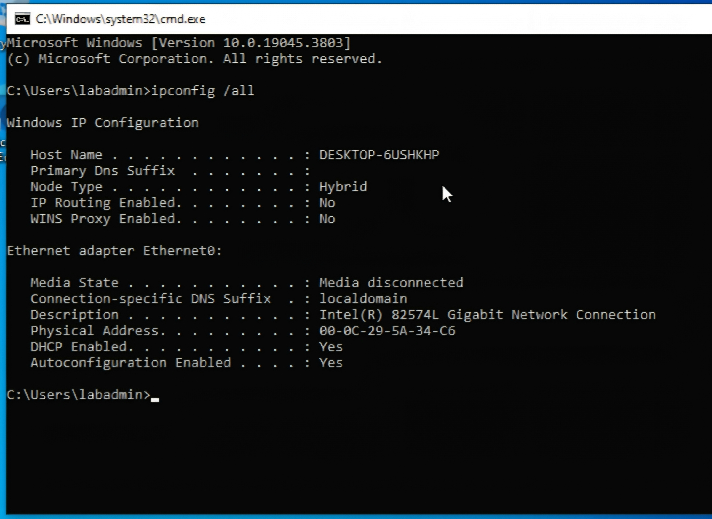
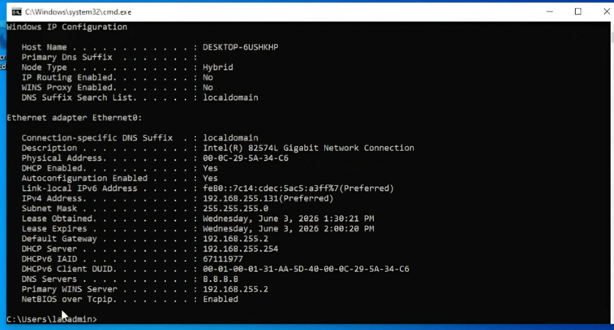
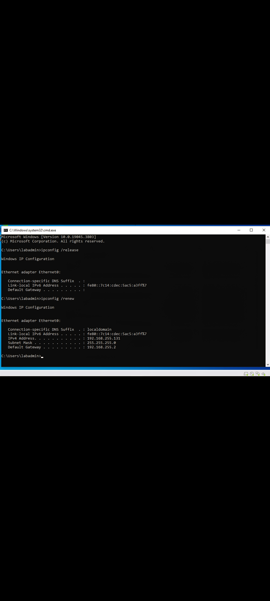
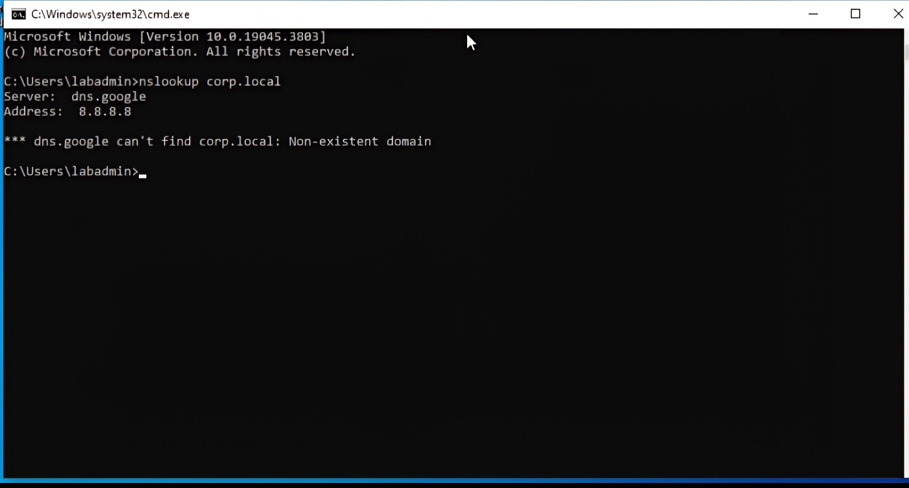
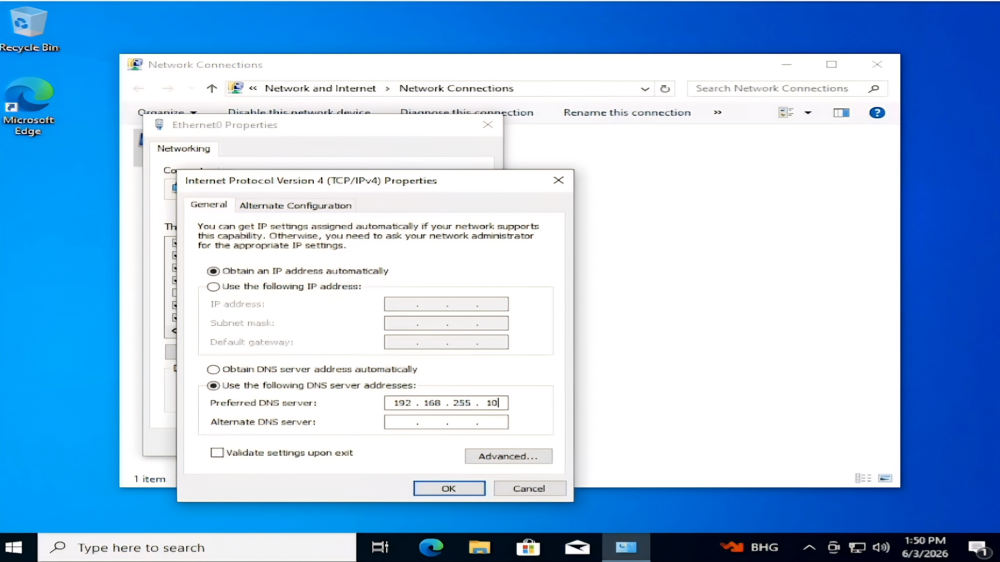
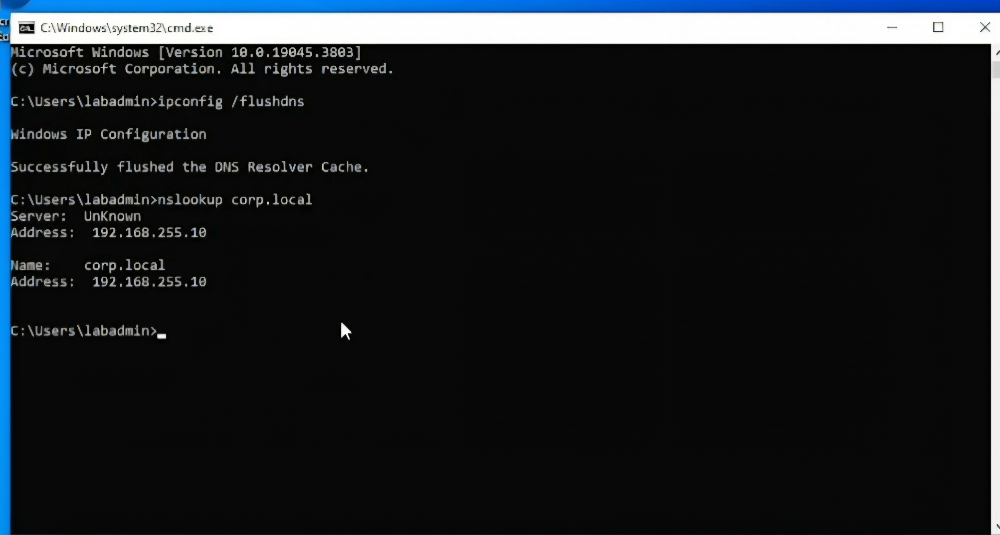
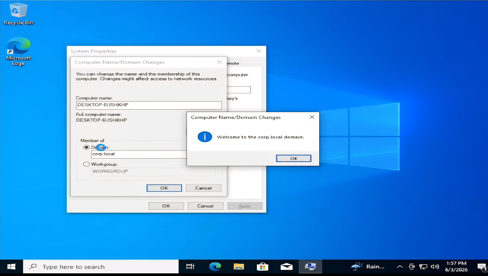

This lab demonstrates diagnosing and resolving a DNS configuration issue that prevented a Windows client from joining the Active Directory domain corp.local.
While attempting to join the client workstation to the corp.local domain, Windows reported that the Active Directory Domain Controller could not be contacted.

I used the following command:
ipconfig /all
The output showed that the Ethernet adapter was disconnected.

After restoring network connectivity, I ran ipconfig /all again.
The workstation received a valid IP address, but I noticed that the DNS server was configured as 8.8.8.8.

I released and renewed the IP configuration.
ipconfig /release ipconfig /renew
The workstation successfully received a valid IP address and default gateway.

To verify name resolution, I used:
nslookup corp.local
The output showed that the workstation was using Google's public DNS server and could not resolve the internal Active Directory domain.

The client was configured to use Google's public DNS server (8.8.8.8) instead of the Domain Controller. Because Active Directory relies heavily on DNS, the client could not locate domain services.
I corrected the Preferred DNS Server and pointed the workstation to the Domain Controller.

After making the change, I cleared the DNS cache and tested name resolution again.
ipconfig /flushdns nslookup corp.local

After correcting the DNS configuration, the workstation successfully joined the corp.local domain.

ipconfig /all ipconfig /release ipconfig /renew ipconfig /flushdns nslookup corp.local